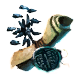
Рецепт Сола
Предметы / С заданий
Открыть в интерактивной вики →
| Вес | 1 |
|---|---|
| Цена | 0 |
Описание
Со всеми собранными ингридиентами отправиться к Ларис
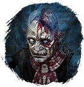
Рафи Линд дал вам этот рецепт питомца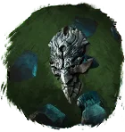
Сол в награду за вашу доброту. К сожалению, он написан странным алфавитом. Обратитесь к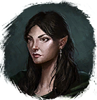
Азария в деревне друидов, может, она сможет вам помочь.| Рафи Линде дал тебе этот рецепт питомца в награду за доброту. К сожалению, он написан на непонятном языке. Обратись к Азарии в Деревне друидов — возможно, она поможет. Можем получить во время выполнения задания Правдивая ложь или купить у Азарии в Деревне друидов за 500 платины. | |
Питомца можно создать самостоятельно, собрав ингредиенты:
|
Рецепт
Создание: 8x
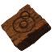
Элементарный глиф + 4x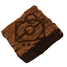
Ученический глиф + 150x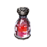
Средняя Фляга Здоровья + 40x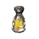
Средняя Фляга Мощи + 55x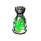
Средняя Фляга Выносливости + 10x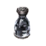
Средняя Фляга Уничтожения + 70x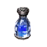
Средняя Фляга Маны + 18x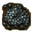
Антрацитовый элементСтоимость
500  Платина
Платина
Платина